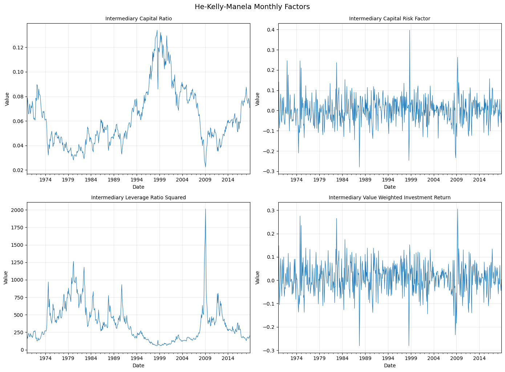
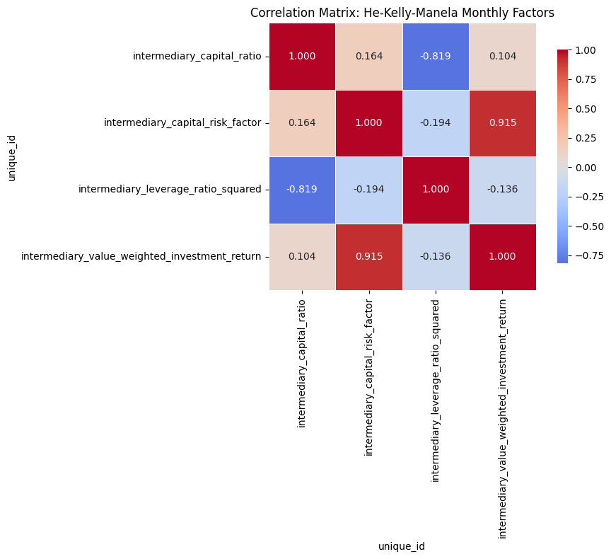
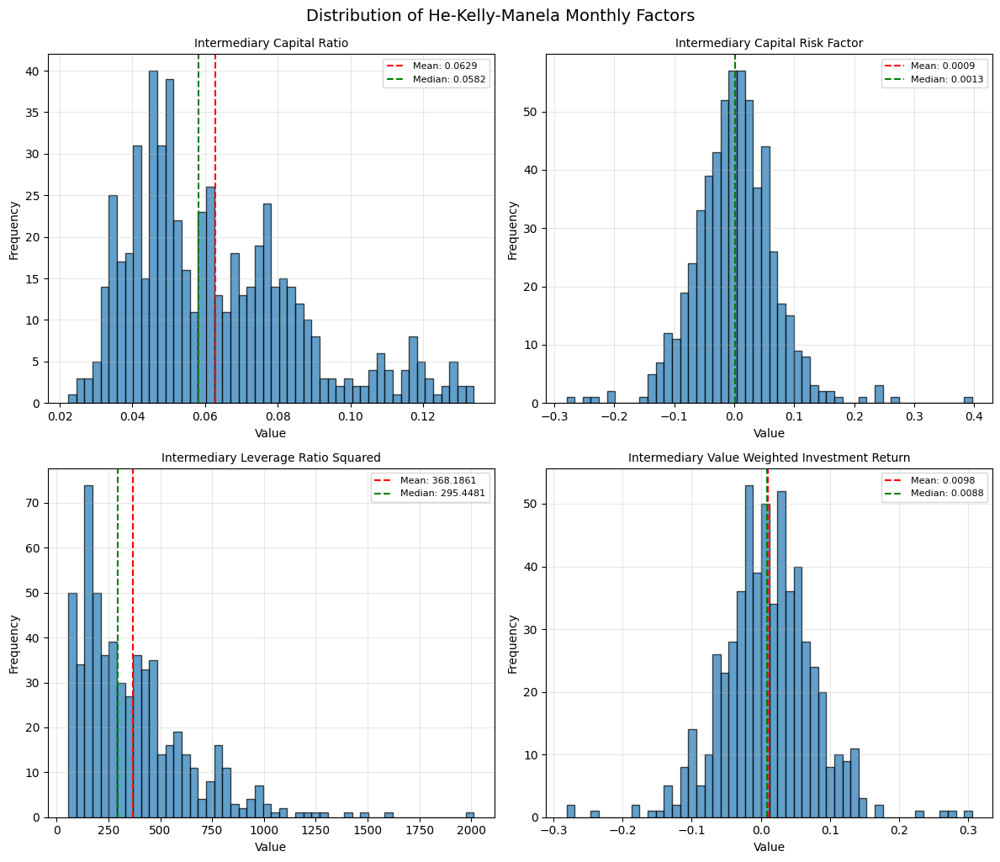

He-Kelly-Manela Intermediary Capital Risk Factors#
This notebook provides summary statistics and visualizations for the He, Kelly, and Manela (2017) intermediary capital risk factors dataset.
Reference#
He, Zhiguo, Bryan Kelly, and Asaf Manela. “Intermediary asset pricing: New evidence from many asset classes.” Journal of Financial Economics 126.1 (2017): 1-35.
Data Source#
Data is publicly available from Asaf Manela’s website.
# Import necessary libraries
import pandas as pd
import matplotlib.pyplot as plt
import seaborn as sns
import warnings
import chartbook
BASE_DIR = chartbook.env.get_project_root()
DATA_DIR = BASE_DIR / "_data"
warnings.filterwarnings("ignore")
Load the Datasets#
We have three datasets:
Monthly factors: Core intermediary capital risk factors at monthly frequency
Daily factors: Core intermediary capital risk factors at daily frequency
All factors and test assets: Extended dataset including test portfolios
# Load monthly factors
monthly_df = pd.read_parquet(DATA_DIR / "ftsfr_he_kelly_manela_factors_monthly.parquet")
print(f"Monthly factors shape: {monthly_df.shape}")
monthly_df.head()
Monthly factors shape: (2348, 3)
| unique_id | ds | y | |
|---|---|---|---|
| 0 | intermediary_capital_ratio | 1970-01-01 | 0.0691 |
| 1 | intermediary_capital_ratio | 1970-02-01 | 0.0788 |
| 2 | intermediary_capital_ratio | 1970-03-01 | 0.0756 |
| 3 | intermediary_capital_ratio | 1970-04-01 | 0.0688 |
| 4 | intermediary_capital_ratio | 1970-05-01 | 0.0656 |
# Load daily factors
daily_df = pd.read_parquet(DATA_DIR / "ftsfr_he_kelly_manela_factors_daily.parquet")
print(f"Daily factors shape: {daily_df.shape}")
daily_df.head()
Daily factors shape: (19063, 3)
| unique_id | ds | y | |
|---|---|---|---|
| 0 | intermediary_capital_ratio | 2000-01-03 | 0.121886 |
| 1 | intermediary_capital_ratio | 2000-01-04 | 0.130415 |
| 2 | intermediary_capital_ratio | 2000-01-05 | 0.129495 |
| 3 | intermediary_capital_ratio | 2000-01-06 | 0.132068 |
| 4 | intermediary_capital_ratio | 2000-01-07 | 0.132405 |
# Load all factors and test assets
all_df = pd.read_parquet(DATA_DIR / "ftsfr_he_kelly_manela_all.parquet")
print(f"All factors shape: {all_df.shape}")
all_df.head()
All factors shape: (2064, 3)
| unique_id | ds | y | |
|---|---|---|---|
| 0 | intermediary_capital_ratio | 1970-01-01 | 0.0691 |
| 1 | intermediary_capital_ratio | 1970-02-01 | 0.0788 |
| 2 | intermediary_capital_ratio | 1970-03-01 | 0.0756 |
| 3 | intermediary_capital_ratio | 1970-04-01 | 0.0688 |
| 4 | intermediary_capital_ratio | 1970-05-01 | 0.0656 |
Summary Statistics - Monthly Factors#
The monthly dataset contains four key factors:
intermediary_capital_ratio: Capital ratio of primary dealersintermediary_capital_risk_factor: Innovation in capital ratio (the risk factor)intermediary_value_weighted_investment_return: Value-weighted investment returnintermediary_leverage_ratio_squared: Squared leverage ratio
# Pivot monthly data to wide format for statistics
monthly_wide = monthly_df.pivot(index='ds', columns='unique_id', values='y')
# Calculate summary statistics
summary_stats = monthly_wide.describe().T
summary_stats['skewness'] = monthly_wide.skew()
summary_stats['kurtosis'] = monthly_wide.kurtosis()
summary_stats
| count | mean | std | min | 25% | 50% | 75% | max | skewness | kurtosis | |
|---|---|---|---|---|---|---|---|---|---|---|
| unique_id | ||||||||||
| intermediary_capital_ratio | 587.0 | 0.062899 | 0.023562 | 0.0223 | 0.045550 | 0.058178 | 0.076734 | 0.1340 | 0.913920 | 0.353928 |
| intermediary_capital_risk_factor | 587.0 | 0.000865 | 0.067076 | -0.2795 | -0.038750 | 0.001300 | 0.039464 | 0.3965 | 0.342300 | 3.512531 |
| intermediary_leverage_ratio_squared | 587.0 | 368.186059 | 263.000841 | 55.7145 | 169.833465 | 295.448082 | 481.547050 | 2012.9658 | 1.599553 | 4.137829 |
| intermediary_value_weighted_investment_return | 587.0 | 0.009839 | 0.066614 | -0.2811 | -0.029550 | 0.008758 | 0.050550 | 0.3055 | -0.041477 | 2.261750 |
Time Series Plot - Monthly Factors#
fig, axes = plt.subplots(2, 2, figsize=(14, 10))
axes = axes.flatten()
factors = monthly_wide.columns.tolist()
for i, factor in enumerate(factors):
ax = axes[i]
monthly_wide[factor].plot(ax=ax, linewidth=0.8)
ax.set_title(factor.replace('_', ' ').title(), fontsize=10)
ax.set_xlabel('Date')
ax.set_ylabel('Value')
ax.grid(True, alpha=0.3)
plt.tight_layout()
plt.suptitle('He-Kelly-Manela Monthly Factors', y=1.02, fontsize=14)
plt.show()

Correlation Matrix - Monthly Factors#
# Calculate correlation matrix
corr_matrix = monthly_wide.corr()
# Create heatmap
plt.figure(figsize=(10, 8))
sns.heatmap(
corr_matrix,
annot=True,
fmt=".3f",
cmap="coolwarm",
center=0,
square=True,
linewidths=0.5,
cbar_kws={"shrink": 0.8}
)
plt.title('Correlation Matrix: He-Kelly-Manela Monthly Factors', fontsize=12)
plt.tight_layout()
plt.show()

Summary Statistics - Daily Factors#
# Pivot daily data to wide format
daily_wide = daily_df.pivot(index='ds', columns='unique_id', values='y')
# Calculate summary statistics
daily_summary = daily_wide.describe().T
daily_summary['skewness'] = daily_wide.skew()
daily_summary['kurtosis'] = daily_wide.kurtosis()
daily_summary
| count | mean | std | min | 25% | 50% | 75% | max | skewness | kurtosis | |
|---|---|---|---|---|---|---|---|---|---|---|
| unique_id | ||||||||||
| intermediary_capital_ratio | 4766.0 | 0.079561 | 0.035281 | 0.014590 | 0.049814 | 0.072308 | 0.106825 | 0.173551 | 0.429865 | -0.956184 |
| intermediary_capital_risk_factor | 4765.0 | 0.000012 | 0.017560 | -0.160301 | -0.006664 | 0.000244 | 0.006874 | 0.180522 | 0.062697 | 15.231859 |
| intermediary_leverage_ratio_squared | 4766.0 | 310.194149 | 377.917039 | 33.200589 | 87.630015 | 191.261908 | 402.999010 | 4698.062378 | 4.156587 | 26.701841 |
| intermediary_value_weighted_investment_return | 4766.0 | 0.000339 | 0.016795 | -0.118388 | -0.006588 | 0.000254 | 0.007124 | 0.193509 | 0.751259 | 15.216913 |
Data Coverage#
Let’s examine the date range and data availability for each dataset.
# Monthly data coverage
print("Monthly Factors:")
print(f" Date range: {monthly_wide.index.min()} to {monthly_wide.index.max()}")
print(f" Number of observations: {len(monthly_wide)}")
print(f" Missing values per column:")
print(monthly_wide.isnull().sum())
Monthly Factors:
Date range: 1970-01-01 00:00:00 to 2018-11-01 00:00:00
Number of observations: 587
Missing values per column:
unique_id
intermediary_capital_ratio 0
intermediary_capital_risk_factor 0
intermediary_leverage_ratio_squared 0
intermediary_value_weighted_investment_return 0
dtype: int64
# Daily data coverage
print("\nDaily Factors:")
print(f" Date range: {daily_wide.index.min()} to {daily_wide.index.max()}")
print(f" Number of observations: {len(daily_wide)}")
print(f" Missing values per column:")
print(daily_wide.isnull().sum())
Daily Factors:
Date range: 2000-01-03 00:00:00 to 2018-12-11 00:00:00
Number of observations: 4766
Missing values per column:
unique_id
intermediary_capital_ratio 0
intermediary_capital_risk_factor 1
intermediary_leverage_ratio_squared 0
intermediary_value_weighted_investment_return 0
dtype: int64
Distribution Analysis#
fig, axes = plt.subplots(2, 2, figsize=(12, 10))
axes = axes.flatten()
for i, factor in enumerate(factors):
ax = axes[i]
monthly_wide[factor].hist(ax=ax, bins=50, edgecolor='black', alpha=0.7)
ax.axvline(monthly_wide[factor].mean(), color='red', linestyle='--', label=f'Mean: {monthly_wide[factor].mean():.4f}')
ax.axvline(monthly_wide[factor].median(), color='green', linestyle='--', label=f'Median: {monthly_wide[factor].median():.4f}')
ax.set_title(factor.replace('_', ' ').title(), fontsize=10)
ax.set_xlabel('Value')
ax.set_ylabel('Frequency')
ax.legend(fontsize=8)
ax.grid(True, alpha=0.3)
plt.tight_layout()
plt.suptitle('Distribution of He-Kelly-Manela Monthly Factors', y=1.02, fontsize=14)
plt.show()

Conclusion#
This dataset provides intermediary capital risk factors that can be used for asset pricing studies. The factors capture the risk-bearing capacity of financial intermediaries and their role in determining asset prices across multiple asset classes.